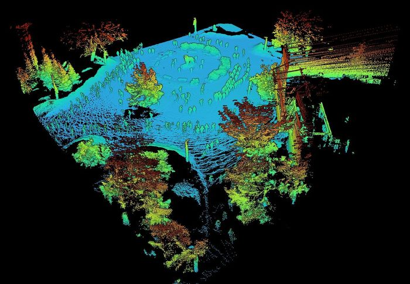
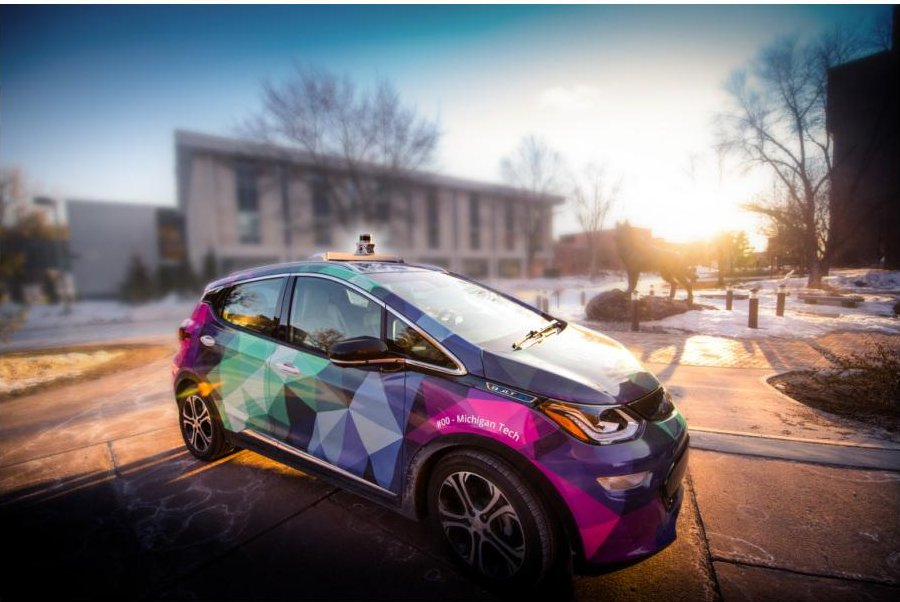

Autonomy in winter weather
How snow, ice, and cold change what autonomous vehicles can sense and how they should drive, from lidar clutter to control on low-friction surfaces.
Michigan Technological University · Electrical & Computer Engineering
We build autonomy, perception, and optical sensing that keep working when conditions don't: snow, ice, off-road terrain, and the turbulent atmosphere.

How snow, ice, and cold change what autonomous vehicles can sense and how they should drive, from lidar clutter to control on low-friction surfaces.
Measuring lidar range error and uncertainty, benchmarking automotive sensors, and making perception work in degraded conditions.
Terrain assessment, point-cloud path planning, and multi-robot coordination for ground vehicles in unstructured environments.
Optical turbulence, imaging through the atmosphere, beam control, and free-space and underwater optical communication.

EE5531 Introduction to Robotics is a hands-on course built on ROS 2 with TurtleBot3 and Clearpath robots. Interactive tools from the course:
Associate Professor of Electrical and Computer Engineering at Michigan Tech and SPIE Fellow. Before joining Michigan Tech in 2015, he was a National Research Council postdoctoral fellow and Directed Energy Scholar at the Air Force Research Laboratory in Maui. Earlier, he worked in aerospace and automotive industry as an antenna engineer at Lockheed Martin, an RF engineer and EMC/RF test lab manager at Johnson Controls, and a project lead for short-range wireless systems at General Motors.